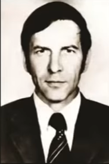
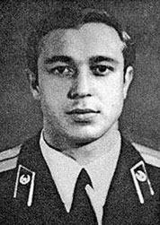
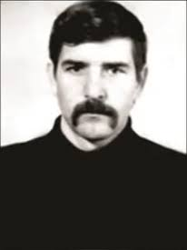

Aleksandr Fyodorovich Akimov
- Born:6 may 1953 (Novosibirsk RFSR, USSR)
- Death:10 may 1986 (Moscow, RFSR, USSR)
- Cause of DeathAcute radiation syndome(ARS)
See biography
Image: CC BY / ДСП "Чорнобильська АЕС"

Leonid Fedorovych Toptunov
- Born:16 agust 1960 (Mykolayivka Sumy Oblast, Ukranian SSR, USSR)
- Death:14 may 1986 (Moscow, RFSR, USSR)
- Cause of DeathAcute radiation syndome(ARS)
See biography

Valery Ilich Khodemchuk
- Born:6 may 1953 (Kropyvnia, Ukranian SSR, USSR)
- Death:26 april 1986 (Chernobyl NPP, Ukranian SSR, USSR)
- Cause of DeathUnknown, probably explosion trauma
See biography

Ivan Lukych Orlov
- Born:10 January 1945 (Unknown)
- Death:13 May 1986 (Moscow, RFSR, USSR)
- Cause of DeathAcute Radiation Syndrome(ARS)
See biography

Valery Ivanovych Perevozchenko
- Born:06 May 1947 (Sarodub, Bryansk, RSFR, URSS)
- Death:13 June 1986 (Moscow, RFSR, USSR)
- Cause of DeathAcute Radiation Syndrome(ARS)
See biography

Volodymyr Pavlovych Pravyk
- Born:13 June 1962 (Chernobyl, Kyiv, Ukranian SSR, USSR)
- Death:11 May 1986 (Moscow, RFSR, USSR)
- Cause of DeathAcute Radiation Syndrome(ARS)
See biography

Vladimir Nikolayevich Shashenok
- Born:21 April 1951 (Shchucha Hrebilia, Bajmach Raion, Chernihiv Oblast, Ukranian SSR, URRS)
- Death:26 April 1986 (Pripyat, Ivankiv Raion, Kyiv Oblast, Ukranian SSR, USSR)
- Cause of DeathSevere vertebral trauma and massive thermal burns
See biography

Vladimir Ivanovych Tishura
- Born:15 December 1959 (Leningrad(Now Saint Petersbourg), RFSR, USSR)
- Death:10 May 1986 (Moscow, RFSR, USSR)
- Cause of DeathAcute Radiation Syndrome(ARS)
See biography

Anatoly Kharlampyovych Kurguz
- Born:12 June 1957 (Krasnovichi, Unecha Raion, Briansk Oblast, RFSR, USSR)
- Death:12 May 1986 (Moscow, RFSR, USSR)
- Cause of DeathAcute Radiation Syndrome(ARS)
See biography